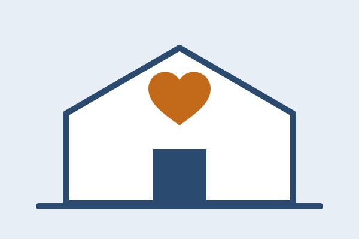
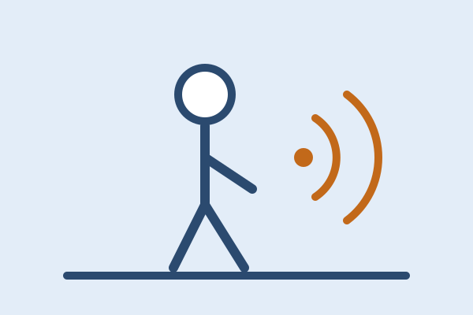
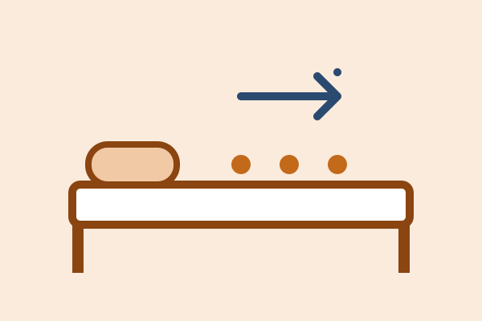
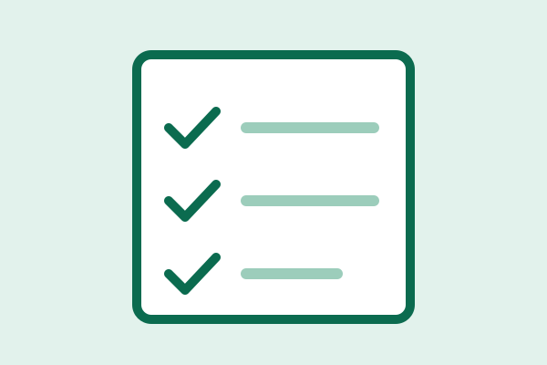
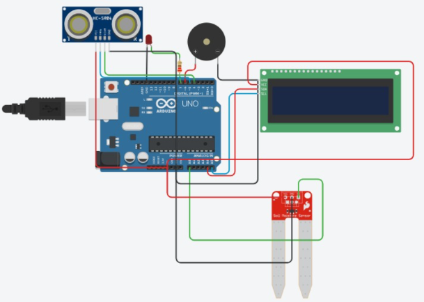
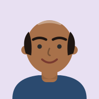
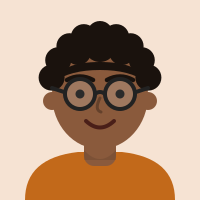
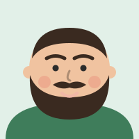
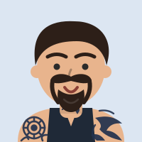
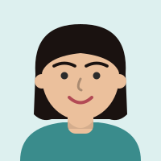

Missão
Desenvolver soluções de tecnologia assistiva de baixo custo para auxiliar cuidadores de idosos, prevenindo quedas, lesões por pressão e otimizando a rotina nas casas de repouso.
Soluções assistivas de baixo custo para cuidadores e casas de repouso, com mais segurança para o idoso.
Fale com a gente
O Cuida Mais é uma iniciativa inovadora voltada para a interseção entre tecnologia, saúde e bem-estar. Nascido com o propósito de transformar a realidade do acompanhamento à pessoa idosa, o projeto desenvolve soluções tecnológicas assistivas, utilizando plataformas como Arduino e sistemas de sensores inteligentes, projetadas especificamente para apoiar cuidadores e instituições de longa permanência para idosos (ILPIs).
Acreditamos que a tecnologia não deve substituir o calor humano, mas sim atuar como um aliado estratégico. Por isso, nossas ferramentas são desenhadas para auxiliar na identificação preventiva de situações de risco, otimizar rotinas e proporcionar maior tranquilidade aos profissionais, permitindo que o cuidado seja cada vez mais seguro, organizado e centrado na pessoa.
Desenvolver soluções de tecnologia assistiva de baixo custo para auxiliar cuidadores de idosos, prevenindo quedas, lesões por pressão e otimizando a rotina nas casas de repouso.
Ser referência em inovação acessível para instituições de longa permanência, promovendo segurança, saúde e dignidade para a terceira idade.
Percebemos o quanto quedas e lesões por pressão pesam na rotina dos cuidadores em casas de repouso.
Estudamos as necessidades das ILPIs e as soluções de tecnologia assistiva já existentes.
Construímos as primeiras versões com Arduino e sensores de baixo custo.
Seguimos aprimorando as soluções para que cheguem a mais instituições.

Sensores inteligentes ajudam a identificar situações de risco e avisam o cuidador a tempo de agir.

Apoio ao acompanhamento do posicionamento do idoso, para reduzir o risco de lesões por pressão.

Ferramentas que otimizam as tarefas do dia a dia e dão mais tranquilidade aos profissionais.
Este é o circuito utilizado no nosso projeto, capaz de detectar a umidade de uma fralda de um idoso, assim como se o mesmo se encontra na sua cama, para garantir segurança e organização para a equipe de enfermagem.

Sensores de umidade e proximidade que acionam o buzzer, o visor LCD e um LED.

Documentação
RA: 325100783
Desenvolvimento do Vídeo
RA: 325200008Arduino
RA: 2125101682
Desenvolvimento do Site
RA: 324200343Criador do Banner
RA: 325200234Documentação
RA: 325101102
Desenvolvimento do Site
RA: 324200597
Arduino
RA: 326102405